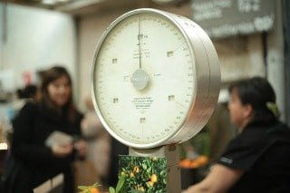

Aunque no nos damos cuenta, vivimos en un mundo de mediciones. Tenemos relojes para medir el tiempo, un cuentakilómetros en el coche para conocer las distancias recorridas, termómetros para saber nuestra temperatura...
El viaje de la medida y sus instrumentos ha sido largo, pero aún está en continua evolución.
Desde tiempos inmemoriales el hombre ha empleado sistemas de medida para cuantificar. Muchos de estos sistemas de medidas estaban basados en partes del cuerpo o en objetos cotidianos (una vara, un pie...) El problema de este tipo de unidades es que no eliminaban la ambigüedad, y fomentaba el uso de diferentes medidas en los distintos pueblos, lo que provocaba dificultades en la comunicación entre ellos.
 |
Magnitud. Unidad de medida.
| Las cualidades de los objetos que se pueden medir se denominan magnitudes. Para medir una cantidad de una magnitud, la comparamos con otra cantidad fija a la que denominamos unidad de medida. |
Tipos de magnitudes.
El resultado de la medición de una cualidad (magnitud) se expresa mediante un número (valor) que indica el número de veces que hemos repetido la unidad, y el nombre de esta. Por ejemplo, si hablamos de nuestra estatura (magnitud longitud) y decimos que medimos 1,78 metros, hemos dado el valor y la unidad correspondiente.
Hemos dicho que una magnitud es cualquier cualidad de un objeto que se puede medir.
| De ahora en adelante utilizaremos el término magnitud para referirnos a magnitud física que es la asociada a una propiedad física o cualidad medible de un sistema físico. Por ejemplo, la longitud, la masa... |
Hay otras magnitudes fuera de la física, como por ejemplo el dinero que responde a utilidades económicas y de intercambio.
| Las magnitudes que quedan perfectamente definidas con el valor y la unidad se llaman magnitudes escalares. Hay otras magnitudes que requieren una "información extra" como la aceleración o la velocidad, en las que tendríamos que dar la dirección y el sentido. A estas magnitudes se las llama vectoriales. |
| Las magnitudes fundamentales son aquellas magnitudes físicas elegidas por convención que permiten expresar cualquier magnitud física en términos de ellas. Gracias a su combinación, las magnitudes fundamentales dan origen a las magnitudes derivadas. |
Reflexiona
Cuando compramos un litro de leche, ¿Qué medidas crees que tenemos en cuenta? ¿Cuáles son las magnitudes asociadas y de qué tipo son?
Elegimos un envase que efectivamente tenga un litro, hablamos de la capacidad, que es una magnitud física escalar.
Además, podemos mirar su fecha de caducidad, es decir, el tiempo, que sería otra magnitud física escalar.
Y por último, podemos fijarnos en el dinero, que no es una magnitud física.
Exactitud. Precisión.
Medir consiste en obtener la magnitud (valor numérico) de algún objeto físico, mediante su comparación con otro de la misma naturaleza que tomamos como patrón. Esta comparación con un patrón, que constituye el acto de medir, está sujeta a una incertidumbre, que puede tener diversos orígenes. Nunca lograremos obtener el verdadero valor de la magnitud, siempre vamos a obtener un valor aproximado de la misma y necesitamos pues indicar lo buena que es esta aproximación.
Aquí es cuando aparecen los conceptos de: exactitud y precisión.
| La exactitud es lo cerca que el resultado de una medición está del valor verdadero. La precisión es lo cerca que los valores medidos están unos de otros. |
Así que si estás jugando al fútbol y siempre le das al poste izquierdo en lugar de marcar gol, ¡entonces no eres exacto, pero eres preciso!
<br>
Centros de metrología:
Podrías pensar que al hablar de mediciones, ya está todo dicho o como se dice coloquialmente todo inventando. Sin embargo, nada más lejos de la realidad. La metrología es una ciencia cuyo objetivo fundamental es la obtención y expresión del valor de las magnitudes empleando para ello instrumentos, métodos y medios apropiados, con la exactitud requerida en cada caso. Para velar por tales fines tenemos el centro español y el andaluz de metrología, que entre otras labores, ofrece a las industrias y empresas laboratorios equipados con instrumental de alta tecnología y medios de última generación para llevar a cabo mediciones. Pincha en las imágenes si quieres conocer algo más de ellos:
Para saber más
A continuación te ofrecemos una lista de reproducción con dos vídeos documentales sobre la historia de las medidas y qué es medir. Son algo más largos que los vídeos que venimos ofreciendo, pero precisamente en esos minutos de más es dónde está la diferencia, ya que explica con total nitidez y de una forma atractiva, de dónde nacen las actuales unidades de medida, a qué problemas vienen a dar solución. 100 % recomendable y otros conceptos que se introducirán en este y otros temas.